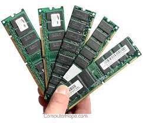

| Jemayen | Procesadores | Presentaciones | Hoja de calculo | Componentes PC |
Una computadora es un sistema informático compuesto por dos aspectos básicos: el hardware, que significa “soporte físico”, y el
software, que se refiere a lo intangible o el “programa”. Los soportes físicos son elementos electrónicos que trabajan conectados
para proporcionar datos, y esos datos son procesados gracias a las instrucciones que proporcionan los programas.
El hardware es como una caja en la que se conectan una serie de dispositivos que procesan información de entrada y de salida.
El software es el conjunto de instrucciones para ejecutar esa información de entrada y salida. Sin las instrucciones del software,
la computadora sería una caja sin utilidad, al igual que lo sería el cuerpo humano sin un cerebro.
Placa madre (o motherboard). Es la placa principal de cualquier sistema informático al que todos los demás dispositivos se conectan,
tanto de manera directa (como los circuitos eléctricos interconectados) como indirecta (a través de puertos USB u otro tipo de
conectores). Cuenta con un software básico llamado BIOS que le permite realizar y sincronizar sus funciones básicas (como la transmisión
de datos, la administración de la energía eléctrica y el reconocimiento de la conexión física de otros componentes externos).
Procesador. Es la Unidad Central de Procesamiento (CPU), es decir, el cerebro de la computadora que controla todo lo que ejecuta el
ordenador y es responsable de realizar los cálculos y la comprensión de datos. Hay varios tipos de CPU que se diferencian, entre otras
cosas, por su velocidad para procesar la información. Esa velocidad se mide en una unidad de frecuencia llamada Hertz (o Hercio en español)
y, es la velocidad alcanzada por el procesador, más rápido será el rendimiento de la computadora. En la actualidad, las dos marcas
principales de CPU son AMD e Intel.Memoria interna RAM. Es la memoria que almacena información, de manera temporal y rápida, para que la
computadora la utilice en el momento. Su capacidad de almacenamiento se mide en unidades llamadas gigabytes (GB). A mayor cantidad de
memoria RAM, más rápido puede funcionar la computadora, por ejemplo, para abrir y usar varios programas a la vez. El contenido de la
memoria RAM se elimina tan pronto se apaga la computadora porque no almacena datos (archivos, videos, programas, etc.), sino que conserva
información sobre las acciones que se están realizando con esos datos. No almacena el archivo o el programa en sí, sino la información para
ejecutarlo.
|  | RAM es la memoria a corto plazo de un ordenador, donde se almacenan los datos que el procesador está utilizando en ese momento. velocidad 1333 MHz |
.jpeg) |
Placa madre Es la placa principal de cualquier sistema informático al que todos los demás dispositivos se conectan. velocidad 50 y los 100 MHz |
.jpeg) |
Procesador Es la Unidad Central de Procesamiento (CPU), es decir, el cerebro de la computadora que controla todo lo que ejecuta el ordenador. velocidad por segundo, medidos en GHz (gigahercios) |
.jpeg) |
Memoria interna ROM. Es la memoria que almacena información de manera permanente y que se denomina de “solo lectura”. velocidad 15 MB/s. |
.jpeg) |
Placa de video. También conocida como “tarjeta gráfica” es un dispositivo de hardware interno que se conecta a la placa madre. velocidad 1600-2000 MHz |
.jpeg) |
Placa base En esta placa conectaremos el procesador, la memoria RAM la tarjeta gráfica y prácticamente todos los elementos internos de nuestro ordenador. velocidad 66, 75 o 112 MHz |
.jpeg) |
BIOS es una memoria de tipo Flash que almacena un pequeño programa con información sobre la configuración de la placa base y los dispositivos en ella conectados. velocidad 2133 MHz |
.jpeg) |
Tarjeta de red un chip que gestiona la conexión de red de nuestro ordenador, así como el correspondiente puerto para conectar el cable del router a él y tener conexión a Internet. velocidad10 Mbit/s o 10/100 Mbit/s. |
.jpeg) |
Disco Duro es un dispositivo que se instala de forma interna en nuestro equipo, aunque también existen de forma externa, y conectados mediante USB en la mayoría de casos. velocidad 7.200 rpm. |
.jpeg) |
Fuente de alimentación es un dispositivo que proporciona corriente eléctrica a los elementos electrónicos que constituyen nuestro ordenador. velocidad 60 Hertz (Hz o ciclos por segundo) |
.png)